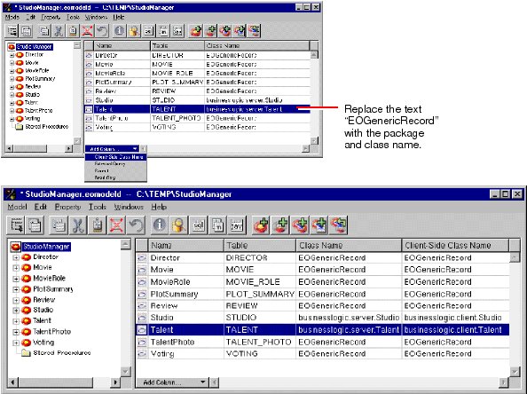

Creating a Java Client WebObjects Application
If you create the model earlier with the help of the wizard, and choose the "Create Custom Enterprise objects" option, EOModeler derives both entity name and class name from the name of the associated database table. Otherwise, EOModeler maps entities to the EOGenericRecord class, which can be thought of as the default enterprise object class.
The EOGenericRecord class is sufficient when all you want the entity to do is get and set properties. However, when you want to add custom behavior to a class (for example, to assign default values when you create new objects or to perform validation), you need to implement a custom enterprise object class. This class includes the default behavior provided in EOGenericRecord as well as the custom behavior you implement.
In the Model Editor, select the model (StudioManager).Select the Studio entity in the table.
Double-click the Studio cell under Class Name.
Type "businesslogic.server.Studio" in the cell ("businesslogic.server" is the package name).
Double-click the adjoining cell under the Client-Side Class Name column.
Type "businesslogic.client.Studio" in this cell ("businesslogic.client" is the package name).
Repeat the above steps for the Talent entity (append "Talent" to the package names).
For the StudioManager application, ensure that there are custom classes (with their package prefixes) corresponding to the appropriate entity; these classes should be named businesslogic.server.Studio and businesslogic.server.Talent under Class Name and businesslogic.client.Studio and businesslogic.client.Talent under Client-Side Class Name. Movie doesn't need to be a custom class since it doesn't have any specialized behavior. By convention, the names of classes (minus the package prefix) are based on the name of the corresponding entity and the initial letter of the name is capitalized.
There is no requirement that you create matching server and client classes. You can implement a class only on the server or the client, whichever suits your needs; the unimplemented class assumes the default behavior of EOGenericRecord.
Once you specify a custom class for an entity in EOModeler, you can generate source files for that entity.